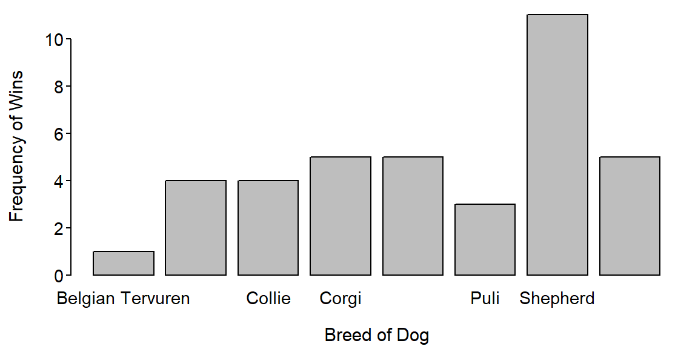

> sdCalc(c(18,28,25,21,16,24))Demonstration of parts of a std. dev. calculation.
x diffs diffs.sq
1 18 -4 16
2 28 6 36
3 25 3 9
4 21 -1 1
5 16 -6 36
6 24 2 4
sum 132 0 102
Mean = x-bar = 132 / 6 = 22
Variance = s^2 = 102 / 5 = 20.4
Std. Dev = s = sqrt(20.4) = 4.516636> iqrCalc(c(4,54,16,85,52,29,24,71,61,60,2))Median (=52) is the value in position 6.
2 4 16 24 29 [52] 54 60 61 71 85
Q1 (=16) is the value in position 3 of the lower half.
2 4 [16] 24 29
Q3 (=61) is the value in position 3 of the upper half.
54 60 [61] 71 85
**Note that the median (=52) is NOT in both halves.> iqrCalc(c(93,81,34,5,54,84,54,13,1,35,79,63,97,71))Median (=58.5) is the average of values in positions 7 and 8.
1 5 13 34 35 54 [54 63] 71 79 81 84 93 97
Q1 (=34) is the value in position 4 of the lower half.
1 5 13 [34] 35 54 54
Q3 (=81) is the value in position 4 of the upper half.
63 71 79 [81] 84 93 97Should be performed by hand to match results below
group
Belgian Tervuren Bouvier Des Flandres Collie
1 1 3 4
Corgi Old English Sheepdog Puli Shepherd
5 5 3 11
Shetland Sheepdog
5 > percTable(tbl,digits=1)group
Belgian Tervuren Bouvier Des Flandres Collie
2.6 2.6 7.9 10.5
Corgi Old English Sheepdog Puli Shepherd
13.2 13.2 7.9 28.9
Shetland Sheepdog
13.2 
Love Money Pregnancy Other
45 1 0 4 Love Money Pregnancy Other
90 2 0 8